추상 도형 패턴 12안 · 서로 다른 골격의 폰트 12안 · 총 72개 버전
썸네일을 누르면 해당 안의 단색·반전·그라데이션 비교로 이동합니다. 번호 옆 체크박스로 골라보세요.
정사각형 × 사분원 · 대각 분할
직각삼각형 × 둥근 모서리 · 사선 틈
두 개의 곡면 블록 · 엇갈린 수평축
삼각형 × 사각형 × 원호 · 비대칭 적층
평행 곡선 3개 · 사선 절단
네 개의 사분원 · 회전과 작은 간격
평행사변형 × 곡선 끝 · 엇갈림
작은 사각형 × 큰 곡면 · 비대칭 밀도

삼각형 쌍 × 둥근 절단면 · 수직 간격
곡선 띠 × 직각 블록 · 2:1 비율
엇갈린 3단 · 직선과 볼록한 한쪽 끝
사각형 × 삼각 곡면 · 서로 다른 비움
초압축 · 수직 획 · 대문자
가는 획 대비 · 이탤릭 세리프
넓은 골격 · 두꺼운 디스플레이
고정폭 · 기계적인 리듬
섬세한 세리프 · 가벼운 두께
확장폭 · 얇은 두께 · 넓은 자간
연결형 필기체 · 두꺼운 곡선
각진 곡선 · 디지털 골격
좁은 폭 · 두꺼운 소문자
평행선으로 구성된 인라인
느슨한 손글씨 · 비정형 획
낮고 육중한 덩어리감
선택한 안이 없습니다. 필터를 끄고 번호 옆 체크박스로 골라주세요.